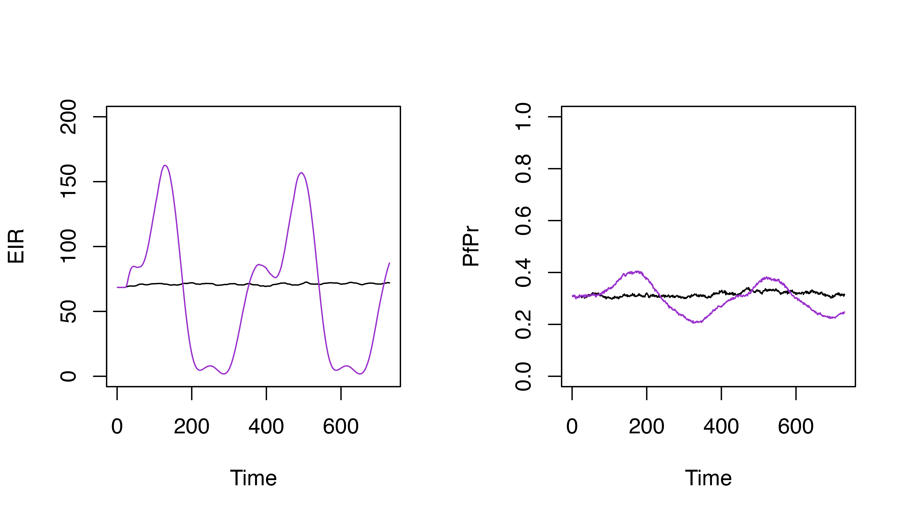
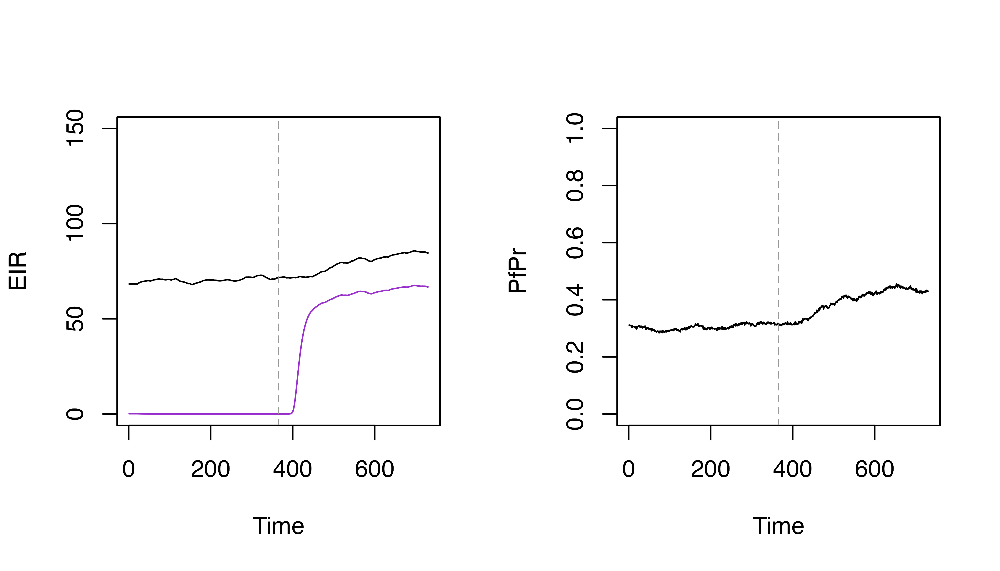
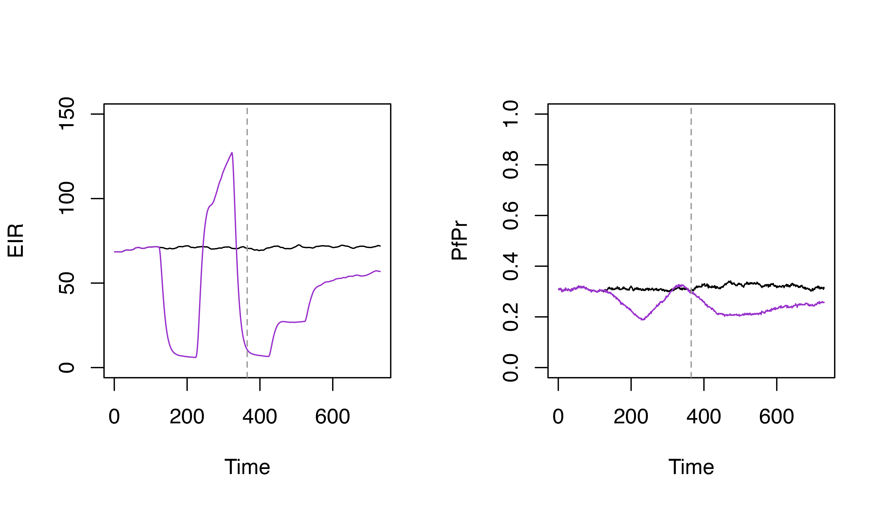
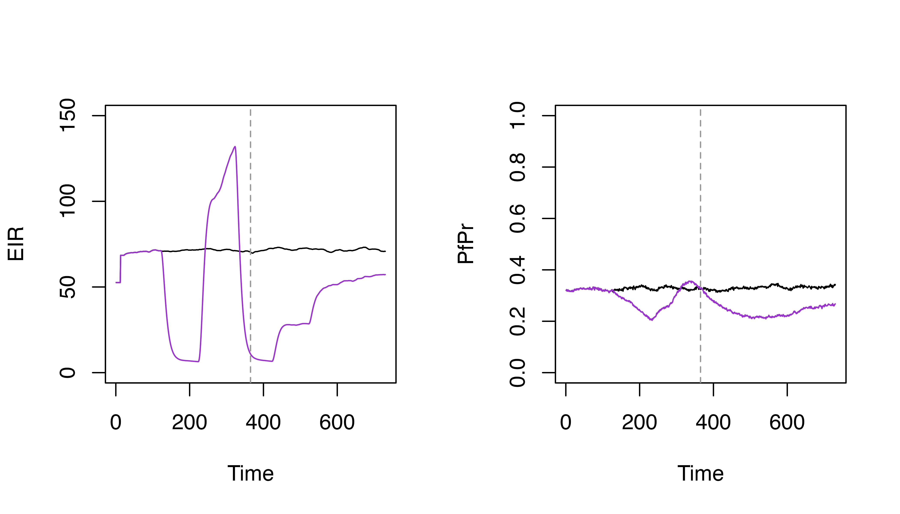

Carrying-capacity.Rmd
library(malariasimulation)The vector model in malariasimulation initialises vector species populations with a given carrying capacity. This capacity determines the population size of mosquitoes that the environment can support, ultimately feeding into the intensity of transmission in the simulation.
There are a number of reasons why the baseline carrying capacity may change over time. Natural variations caused by seasonal rainfall lead to intra-annual changes in the carrying capacity. Human intervention may seek to reduce the carrying capacity, for example by implementing larval source management. An invasive species may exploit a previously empty niche, leading to an increase in the carrying capacity.
All of these phenomena can be captured in malariasimulation using a selection of functions to modify the parameter list. These are demonstrated below.
First we can set up the basic parameter list
timesteps <- 365 * 2
p <- get_parameters(overrides = list(human_population = 5000)) |>
set_equilibrium(init_EIR = 5)We can modify our basic parameter list to include a seasonal profile
p_seasonal <- p
p_seasonal$model_seasonality = TRUE
p_seasonal$g0 = 0.28605
p_seasonal$g = c(0.20636, -0.0740318, -0.0009293)
p_seasonal$h = c(0.173743, -0.0730962, -0.116019)
p_seasonal <- p_seasonal |>
set_equilibrium(init_EIR = 5)and can run the simulations and compare the outputs
set.seed(123)
s <- run_simulation(timesteps = timesteps, parameters = p)
s$pfpr <- s$n_detect_730_3650 / s$n_730_3650
set.seed(123)
s_seasonal <- run_simulation(timesteps = timesteps, parameters = p_seasonal)
s_seasonal$pfpr <- s_seasonal$n_detect_730_3650 / s_seasonal$n_730_3650
par(mfrow = c(1, 2))
plot(s$EIR_gamb ~ s$timestep, t = "l", ylim = c(0, 200), xlab = "Time", ylab = "EIR")
lines(s_seasonal$EIR_gamb ~ s_seasonal$timestep, col = "darkorchid3")
plot(s$pfpr ~ s$timestep, t = "l", ylim = c(0, 1), xlab = "Time", ylab = "PfPr")
lines(s_seasonal$pfpr ~ s_seasonal$timestep, col = "darkorchid3")
In malariasimulation, we can also modify the carrying capacity over time in a more bespoke manner. Firstly it is helpful to start with our baseline (equilibrium) carrying capacity. We can access this for our baseline parameters with:
cc <- get_init_carrying_capacity(p)
cc
#> gamb
#> 65585.97We can then use this in combination with
set_carrying_capacity() to provide modified,
species-specific carrying capacity values at given timepoints. This
allows us to model a number of useful things:
The impact of larval source management (LSM) is captured by reducing
the carrying capacity. The helper function
set_carrying_capacity() can be used to specify this
intervention
# Specify the LSM coverage
lsm_coverage <- 0.8
# Set LSM by reducing the carrying capacity by (1 - coverage)
p_lsm <- p |>
set_carrying_capacity(
carrying_capacity = matrix(cc * (1 - lsm_coverage), ncol = 1),
timesteps = 365
)
set.seed(123)
s_lsm <- run_simulation(timesteps = timesteps, parameters = p_lsm)
s_lsm$pfpr <- s_lsm$n_detect_730_3650 / s_lsm$n_730_3650
par(mfrow = c(1, 2))
plot(s$EIR_gamb ~ s$timestep, t = "l", ylim = c(0, 150), xlab = "Time", ylab = "EIR")
lines(s_lsm$EIR_gamb ~ s_lsm$timestep, col = "darkorchid3")
abline(v = 365, lty = 2, col = "grey60")
plot(s$pfpr ~ s$timestep, t = "l", ylim = c(0, 1), xlab = "Time", ylab = "PfPr")
lines(s_lsm$pfpr ~ s_lsm$timestep, col = "darkorchid3")
abline(v = 365, lty = 2, col = "grey60")
An invasive species may exploit a new niche, increase the carrying
capacity at the point of invasion. The functions
set_carrying_capacity() gives complete freedom to allow
changes to the carrying capacity to be made. Here we will demonstrate
using carrying capacity rescaling to capture the invasion of
Anopheles stephensi.
# First initialise the mosquito species so that the invasive species starts with
# a negligible, but non-zero proportion.
p_stephensi <- p |>
set_species(list(gamb_params, steph_params), c(0.995, 1 - 0.995)) |>
set_equilibrium(init_EIR = 5)
cc_invasive <- get_init_carrying_capacity(p_stephensi)
# Next, at the time point of invasion, we scale up the carrying capacity for
# the invasive species by a factor that will be dependent on the proporties of
# the invasion.
p_stephensi <- p_stephensi |>
set_carrying_capacity(
carrying_capacity = matrix(cc_invasive * c(1, 2000), ncol = 2),
timesteps = 365
)
set.seed(123)
s_stephensi <- run_simulation(timesteps = timesteps, parameters = p_stephensi)
s_stephensi$pfpr <- s_stephensi$n_detect_730_3650 / s_stephensi$n_730_3650
par(mfrow = c(1, 2))
plot(s_stephensi$EIR_gamb ~ s_stephensi$timestep,
t = "l", ylim = c(0, 150), xlab = "Time", ylab = "EIR")
lines(s_stephensi$EIR_steph ~ s_stephensi$timestep, col = "darkorchid3")
abline(v = 365, lty = 2, col = "grey60")
plot(s_stephensi$pfpr ~ s_stephensi$timestep, t = "l", ylim = c(0, 1), xlab = "Time", ylab = "PfPr")
abline(v = 365, lty = 2, col = "grey60")
The function set_carrying_capacity() can be used to
modify or set very specific carrying capacity changes over time. We can
demonstrate this below by arbitrarily stepping the carrying capacity up
and down over time
p_flexible <- p |>
set_carrying_capacity(
carrying_capacity = cc * matrix(c(0.1, 2, 0.1, 0.5, 0.9), ncol = 1),
timesteps = seq(100, 500, 100)
)
set.seed(123)
s_flexible <- run_simulation(timesteps = timesteps, parameters = p_flexible)
s_flexible$pfpr <- s_flexible$n_detect_730_3650 / s_flexible$n_730_3650
par(mfrow = c(1, 2))
plot(s$EIR_gamb ~ s$timestep, t = "l", ylim = c(0, 150), xlab = "Time", ylab = "EIR")
lines(s_flexible$EIR_gamb ~ s_flexible$timestep, col = "darkorchid3")
abline(v = 365, lty = 2, col = "grey60")
plot(s$pfpr ~ s$timestep, t = "l", ylim = c(0, 1), xlab = "Time", ylab = "PfPr")
lines(s_flexible$pfpr ~ s_flexible$timestep, col = "darkorchid3")
abline(v = 365, lty = 2, col = "grey60")